Мы уже говорили, что дроби бывают обыкновенные и десятичные. На данный момент мы немного изучили обыкновенные дроби. Мы узнали, что обыкновенные дроби бывают правильными и неправильными. Также мы узнали что обыкновенные дроби можно сокращать, складывать, вычитать умножать и делить. И ещё мы узнали, что бывают так называемые смешанные числа, которые состоят из целой и дробной части.
Мы ещё не полностью изучили обыкновенные дроби. Есть немало тонкостей и деталей, о которых следует поговорить, но уже сегодня мы начнём изучать десятичные дроби, поскольку обыкновенные и десятичные дроби достаточно часто приходиться сочетать. То есть, при решении задач приходиться работать с обоими видов дробей.
Этот урок возможно покажется сложным и непонятным. Это вполне нормально. Такого рода уроки требуют, чтобы их именно изучали, а не просматривали поверхностно.
Выражение величин в дробном виде
Иногда удобно бывает показать что-либо в дробном виде. Например, одна десятая часть дециметра записывается так:
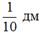
Это выражение означает, что один дециметр был разделён на десять равных частей, и от этих десяти частей была взята одна часть. А одна часть из десяти в данном случае равна одному сантиметру:
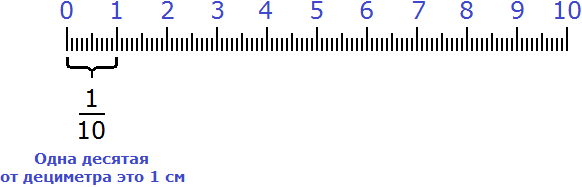
Рассмотрим следующий пример. Пусть требуется показать 6 см и ещё 3 мм в сантиметрах в дробном виде.
Итак, 6 целых сантиметров у нас уже есть:
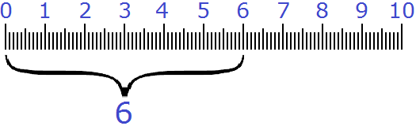
Но осталось еще 3 миллиметра. Как показать эти 3 миллиметра, при этом в сантиметрах?
На помощь приходят дроби. Один сантиметр это десять миллиметров. Три миллиметра это три части из десяти. А три части из десяти записываются как
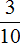
см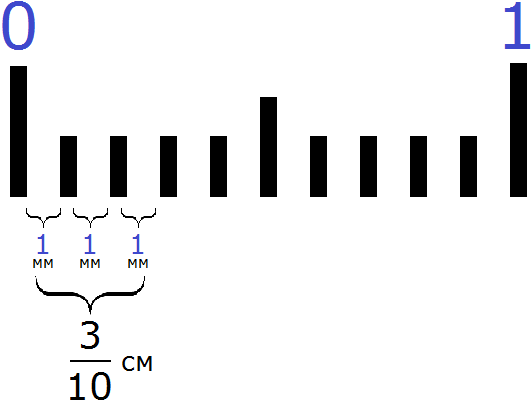
Выражение см означает, что один сантиметр был разделён на десять равных частей, и от этих десяти частей взяли три части.
В результате имеем шесть целых сантиметров и три десятых сантиметра:
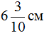
Цифра 6 показывает число целых сантиметров, а дробь — число дробных. Эта дробь читается как «шесть целых и три десятых сантиметра».
Дроби, в знаменателе которых присутствуют числа 10, 100, 1000 можно записывать без знаменателя. Сначала пишут цéлую часть, а потом числитель дробной части. Целая часть отделяется от числителя дробной части запятой.
Например, запишем
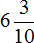
без знаменателя. Сначала записываем целую часть. Целая часть это 66
Целая часть записана. Сразу же после написания целой части ставим запятую:
6,
И теперь записываем числитель дробной части. В смешанном числе числитель дробной части это число 3. Записываем после запятой тройку:
6,3
Любое число, которое представляется в таком виде, называется десятичной дробью.
Поэтому показать 6 см и ещё 3 мм в сантиметрах можно с помощью десятичной дроби:
6,3 см
На рисунке выглядеть это будет так:
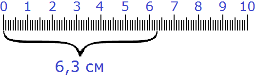
На самом деле десятичные дроби это те же самые обыкновенные дроби и смешанные числа. Особенность таких дробей заключается в том, что в знаменателе их дробной части содержатся числа 10, 100, 1 000 или 10 000.
Как и смешанное число, десятичная дробь имеет цéлую часть и дробную.
Например, в смешанном числе целая часть это 6, а дробная часть это .
В десятичной дроби 6,3 целая часть это число 6, а дробная часть это числитель дроби , то есть число 3.
Бывает и так, что обыкновенные дроби в знаменателе которых числа 10, 100, 1000 даны без целой части. Например, дробь
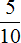
дана без целой части. Чтобы записать такую дробь как десятичную, сначала записывают 0, затем ставят запятую и записывают числитель дробной части.Так, дробь без знаменателя будет записана так:
0,5
Читается как «ноль целых, пять десятых».
Перевод смешанных чисел в десятичные дроби
Когда мы записываем смешанные числа без знаменателя, мы тем самым перевóдим их в десятичные дроби. При переводе обыкновенных дробей в десятичные дроби нужно знать несколько моментов, о которых мы сейчас поговорим.
После того как записана целая часть, обязательно нужно посчитать количество нулей в знаменателе дробной части, поскольку количество нулей в знаменателе дробной части и количество цифр после запятой в десятичной дроби должно быть одинаковым. Что это значит?
Рассмотрим следующий пример: перевести смешанное число 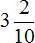
Сначала записываем цéлую часть и ставим запятую:
3,
И можно бы сразу записать числитель дробной части и десятичная дробь готова, но обязательно нужно посчитать сколько нулей содержится в знаменателе дробной части.
Итак, посчитаем количество нулей в дробной части смешанного числа . Видим, что в знаменателе дробной части один ноль. Значит в десятичной дроби после запятой будет одна цифра и это цифра будет числитель дробной части смешанного числа , то есть число 2
3,2
Таким образом, смешанное число при переводе в десятичную дробь обращается в 3,2. Эта десятичная дробь читается так:
«Три целых, две десятых»
«Десятых» потому что в дробной части смешанного числа содержится число 10.
Пример 2. Перевести смешанное число
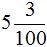
в десятичную дробь.Записываем цéлую часть и ставим запятую:
5,
И можно бы сразу записать числитель дробной части и получить десятичную дробь 5,3 но правило говорит, что после запятой должно быть столько цифр сколько нулей в знаменателе дробной части смешанного числа . А мы видим что в знаменателе дробной части два нуля. Значит в нашей десятичной дроби после запятой должно быть две цифры, а не одна.
В таких случаях числитель дробной части нужно немного видоизменить: добавить ноль перед числителем, то есть перед числом 3
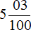
Теперь можно довести дело до конца. Записываем после запятой числитель дробной части:
5,03
Видим, что количество цифр после запятой и количество нулей в знаменателе дробной части смешанного числа одинаково.
Десятичная дробь 5,03 читается так:
«Пять целых, три сотых»
«Сотых» потому что в знаменателе дробной части смешанного числа содержится число 100.
Пример 3. Перевести смешанное число
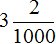
в десятичную дробь.Из предыдущих примеров мы узнали, что для успешного перевода смешанного числа в десятичную дробь, количество цифр в числителе дробной части и количество нулей в знаменателе дробной части должно быть одинаковым.
Перед переводом смешанного числа в десятичную дробь, его дробную часть нужно немного видоизменить, а именно сделать так чтобы количество цифр в числителе дробной части и количество нулей в знаменателе дробной части было одинаковым.
В первую очередь смóтрим на количество нулей в знаменателе дробной части. Видим, что там три нуля:
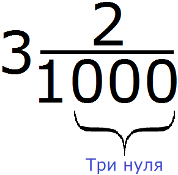
Наша задача организовать в числителе дробной части три цифры. Одна цифра у нас уже есть — это цифра 2. Осталось добавить ещё две цифры. Ими будут два нуля. Добавим их перед цифрой 2. В результате количество нулей в знаменателе и количество цифр в числителе станет одинаковым:
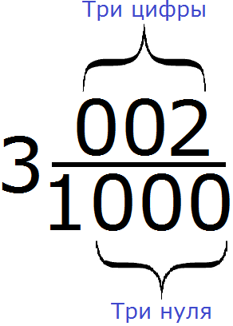
Теперь можно заняться переводом этого смешанного числа в десятичную дробь. Записываем сначала цéлую часть и ставим запятую:
3,
и сразу записываем числитель дробной части
3,002
Видим, что количество цифр после запятой и количество нулей в знаменателе дробной части смешанного числа
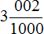
одинаково.Десятичная дробь 3,002 читается так:
«Три целых, две тысячных»
«Тысячных» потому что в знаменателе дробной части смешанного числа содержится число 1000.
Перевод обыкновенных дробей в десятичные дроби
Обыкновенные дроби, у которых в знаменателе числа 10, 100, 1000 или 10000, тоже можно перевести в десятичные дроби. Поскольку у обыкновенной дроби целая часть отсутствует, сначала записывают 0, затем ставят запятую и записывают числитель дробной части.
Здесь также количество нулей в знаменателе и количество цифр в числителе должно быть одинаковым. Поэтому следует быть внимательным.
Пример 1. Перевести обыкновенную дробь в десятичную дробь.
Целая часть отсутствует, значит сначала записываем 0 и ставим запятую:
0,
Теперь смóтрим на количество нулей в знаменателе. Видим, что там один ноль. И в числителе одна цифра. Значит можно спокойно продолжить десятичную дробь, записав после запятой цифру 5
0,5
В полученной десятичной дроби 0,5 количество цифр после запятой и количество нулей в знаменателе дроби одинаково. Значит дробь переведена правильно.
Десятичная дробь 0,5 читается так:
«Ноль целых, пять десятых»
Пример 2. Перевести обыкновенную дробь
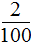
в десятичную дробь.Целая часть отсутствует. Записываем сначала 0 и стáвим запятую:
0,
Теперь смóтрим на количество нулей в знаменателе. Видим, что там два нуля. А в числителе только одна цифра. Чтобы сделать количество цифр и количество нулей одинаковым, добавим в числителе перед цифрой 2 один ноль. Тогда дробь примет вид
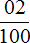
. Теперь количество нулей в знаменателе и количество цифр в числителе одинаково. Значит можно продолжить десятичную дробь:0,02
В полученной десятичной дроби 0,02 количество цифр после запятой и количество нулей в знаменателе дроби одинаково. Значит дробь переведена правильно.
Десятичная дробь 0,02 читается так:
«Ноль целых, две сотых».
Пример 3. Перевести обыкновенную дробь
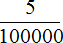
в десятичную дробь.Записываем 0 и стáвим запятую:
0,
Теперь посчитаем количество нулей в знаменателе дроби . Видим, что там пять нулей, а в числителе только одна цифра. Чтобы сделать количество нулей в знаменателе и количество цифр в числителе одинаковым, нужно в числителе перед цифрой 5 дописать четыре нуля:
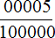
Теперь можно продолжить десятичную дробь. Записываем после запятой числитель дроби
0,00005
В полученной десятичной дроби 0,00005 количество цифр после запятой и количество нулей в знаменателе дроби одинаково. Значит дробь переведена правильно.
Десятичная дробь 0,00005 читается так:
«Ноль целых, пять стотысячных».
Перевод неправильных дробей в десятичную дробь
Неправильная дробь это дробь, у которой числитель больше знаменателя.
Бывают неправильные дроби, у которых в знаменателе содержатся числа 10, 100, 1000 или 10000. Такие дроби можно переводить в десятичные. Но перед переводом в десятичную дробь, у таких дробей необходимо выделять цéлую часть.
Пример 1. Перевести неправильную дробь
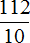
в десятичную.Дробь является неправильной. Чтобы перевести такую дробь в десятичную, нужно в первую очередь выделить у нее цéлую часть. Вспоминаем, как выделять целую часть у неправильных дробей. Если забыли, советуем вернуться к этой теме и хорошенько изучить её.
Итак, выделим целую часть в неправильной дроби . Напомним, что дробь означает деление — в данном случае деление числа 112 на число 10. Деление нужно выполнить с остатком:
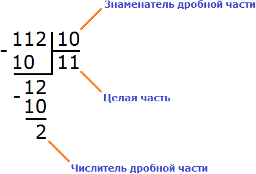
Посмóтрим на этот рисунок и соберём новое смешанное число, подобно детскому конструктору. Частное 11 будет целой частью, остаток 2 — числителем дробной части, делитель 10 — знаменателем дробной части:
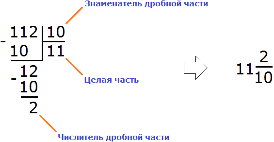
Мы получили смешанное число
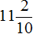
. Его и переведём в десятичную дробь. А как переводить такие числа в десятичные дроби мы уже знаем. Сначала записываем целую часть и ставим запятую:11,
Теперь посчитаем количество нулей в знаменателе дробной части. Видим, что там один ноль. И в числителе дробной части одна цифра. Значит количество нулей в знаменателе дробной части и количество цифр в числителе дробной части одинаково. Это даёт нам возможность сразу записать после запятой числитель дробной части:
11,2
Значит, неправильная дробь при переводе в десятичную обращается в 11,2
Десятичная дробь 11,2 читается так:
«Одиннадцать целых, две десятых».
Пример 2. Перевести неправильную дробь
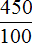
в десятичную дробь.Это неправильная дробь, поскольку числитель больше знаменателя. Но её можно перевести в десятичную дробь, поскольку в знаменателе содержится число 100.
В первую очередь выделим целую часть этой дроби. Для этого разделим уголком 450 на 100:
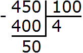
Соберём новое смешанное число — получим
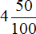
. Теперь переведём его в десятичную дробь. Записываем целую часть и ставим запятую:4,
Теперь посчитаем количество нулей в знаменателе дробной части и количество цифр в числителе дробной части. Видим, что количество нулей в знаменателе и количество цифр в числителе одинаково. Это даёт нам возможность сразу записать числитель дробной части после запятой:
4,50
Значит неправильная дробь при переводе в десятичную обращается в 4,50
При решении задач, если в конце десятичной дроби оказываются нули, их можно отбросить. Давайте и мы отбросим ноль в нашем ответе. Тогда мы получим 4,5
Это одна из интересных особенностей десятичных дробей. Она заключается в том, что нули которые стоят в конце дроби, не придают этой дроби никакого веса. Другими словами, десятичные дроби 4,50 и 4,5 равны и между ними можно поставить знак равенства:
4,50 = 4,5
Возникает вопрос «а почему так происходит?» Ведь на вид 4,50 и 4,5 разные дроби. Весь секрет кроется в основном свойстве дроби, котором мы изучали ранее. Мы попробуем доказать, почему равны десятичные дроби 4,50 и 4,5, но после изучения следующей темы, которая называется «перевод десятичной дроби в смешанное число».
Перевод десятичной дроби в смешанное число
Любая десятичная дробь может быть обратно переведена в смешанное число. Для этого достаточно уметь читать десятичные дроби.
Например, переведём 6,3 в смешанное число. 6,3 это шесть целых и три десятых. Записываем сначала шесть целых:
6
и рядом три десятых:
Пример 2. Перевести десятичную дробь 3,002 в смешанное число
3,002 это три целых и две тысячных. Записываем сначала три целых
3
и рядом записываем две тысячных:
3
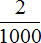
Пример 3. Перевести десятичную дробь 4,50 в смешанное число
4,50 это четыре целых и пятьдесят сотых. Записываем четыре целых
4
и рядом пятьдесят сотых:
Кстати, давайте вспомним последний пример из предыдущей темы. Мы сказали, что десятичные дроби 4,50 и 4,5 равны. Также мы сказали, что ноль можно отбросить. Докажем, что десятичные 4,50 и 4,5 равны. Для этого переведем обе десятичные дроби в смешанные числа.
После перевода в смешанное число десятичная дробь 4,50 обращается в , а десятичная дробь 4,5 обращается в
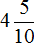
Имеем два смешанных числа и . Переведём эти смешанные числа в неправильные дроби:
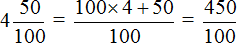
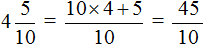
Теперь имеем две дроби
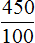
и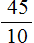
. Теперь вспоминаем основное свойство дроби, которое говорит о том, что при умножении (или делении) числителя и знаменателя дроби на одно и то же число, значение дроби не меняется.Давайте разделим числитель и знаменатель первой дроби на число 10
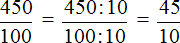
Получили , а это есть вторая дробь. Значит и равны между собой и равны одному и тому же значению:
=
Попробуйте на калькуляторе разделить сначала 450 на 100, а затем 45 на 10. Забавная штука получится.
Перевод десятичной дроби в обыкновенную дробь
Любая десятичная дробь может быть обратно переведена в обыкновенную дробь. Для этого опять же достаточно уметь читать десятичные дроби. Например, переведём 0,3 в обыкновенную дробь. 0,3 это ноль целых и три десятых. Записываем сначала ноль целых:
0
и рядом три десятых 0 . Ноль по традиции не записывают, поэтому окончательный ответ будет не 0, а просто .
Пример 2. Перевести десятичную дробь 0,02 в обыкновенную дробь.
0,02 это ноль целых и две сотых. Ноль не записываем, поэтому сразу записываем две сотых
Пример 3. Перевести 0,00005 в обыкновенную дробь
0,00005 это ноль целых и пять сто тысячных. Ноль не записываем, поэтому сразу записываем пять сто тысячных
Пример 4. Перевести 3,5 в обыкновенную дробь
Сначала переведём данную десятичную дробь в смешанное число:
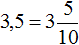
Теперь смешанное число
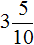
переведём в неправильную (обыкновенную) дробь: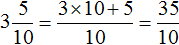
Пример 5. Перевести 1,25 в обыкновенную дробь
Сначала переведём данную десятичную дробь в смешанное число:
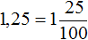
Теперь смешанное число
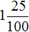
переведём в неправильную (обыкновенную) дробь: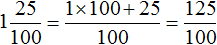